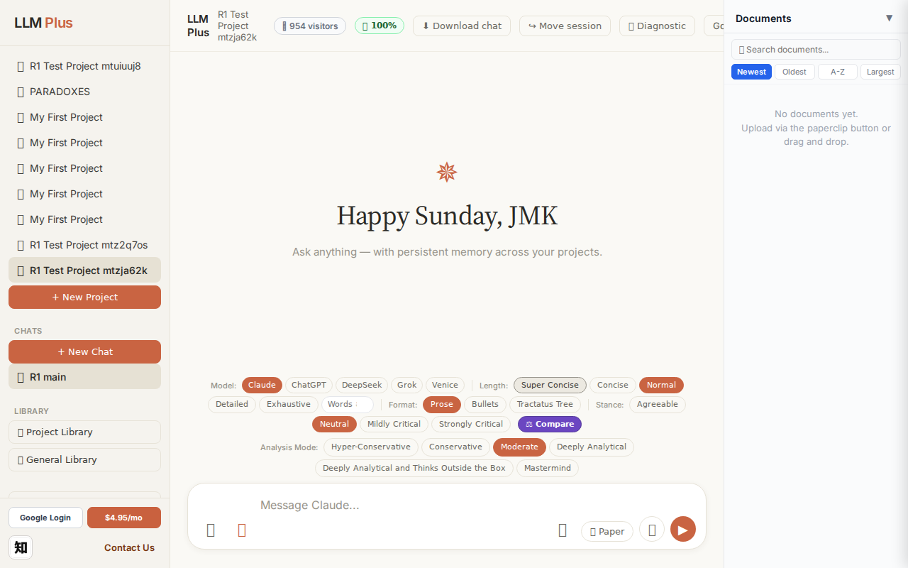
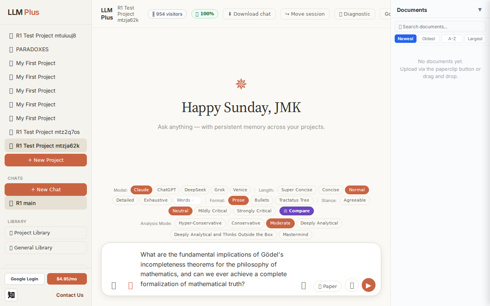
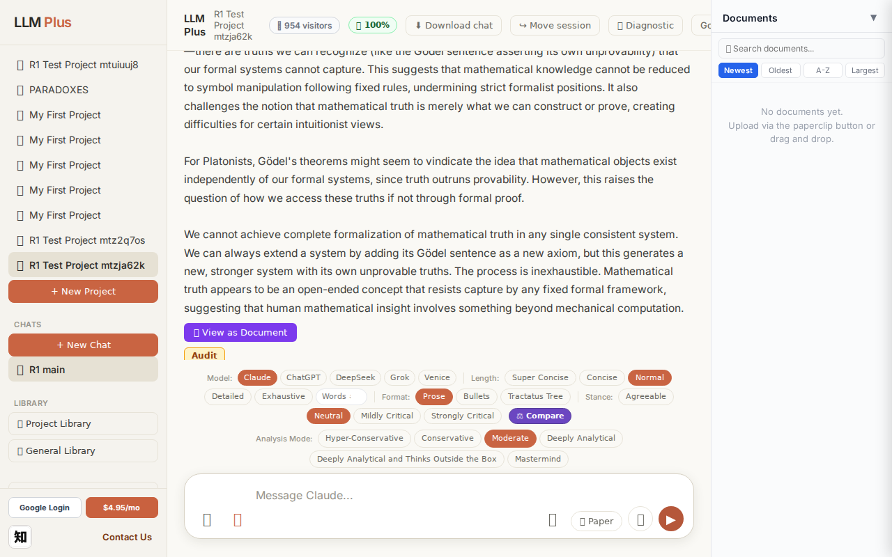
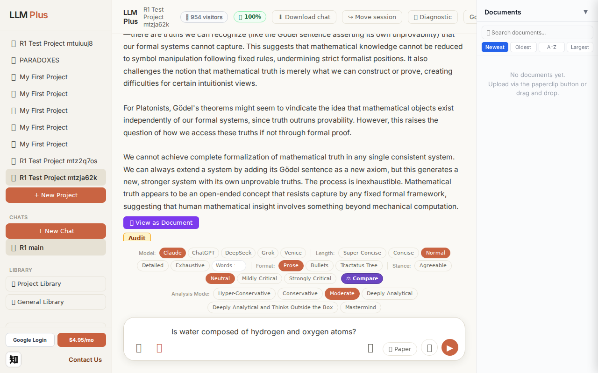
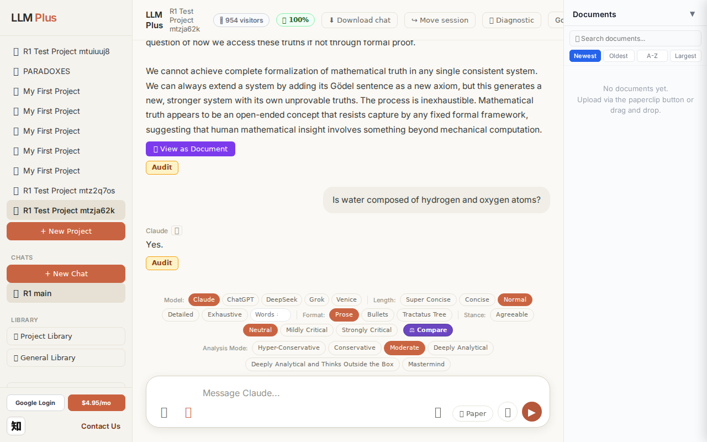
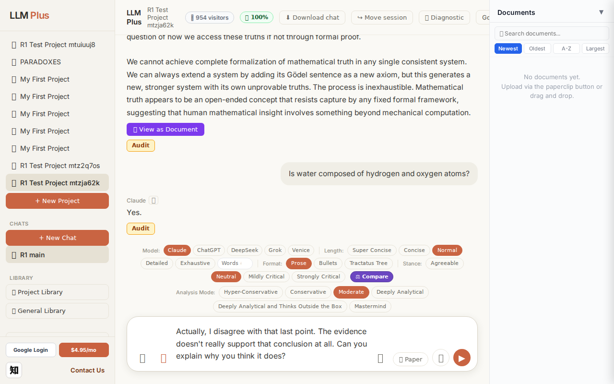

Function 4 — Project chat
Exchange #1 in test project (Invariant A check)
R1 approach: tag_probe_OPEN
R1 reasoning: First exchange - establishing an open scholarly question to test how LLMPlus handles unresolved inquiry tagging and memory tree creation. Testing if system properly marks genuinely open questions without forcing premature resolution.
R1 input (verbatim):
What are the fundamental implications of Gödel's incompleteness theorems for the philosophy of mathematics, and can we ever achieve a complete formalization of mathematical truth?
App page text after:
Tractatus delta
nodes: 0 → 17 (Δ 17)
new ids: 1.0, 1.1, 1.2, 1.3, 1.4, 1.5, 1.6, 1.1.1, 1.1.2, 1.2.1, 1.2.2, 1.2.3, 1.3.1, 1.4.1, 1.5.1, 1.5.2, 1.6.1
new tags: DOCUMENT, ASSERTS, ASSERTS, ASSERTS, OPEN, RESOLVED, ASSERTS, ASSERTS, ASSERTS, ASSERTS, REJECTS, REJECTS, ASSERTS, QUESTION, ASSERTS, ASSERTS, ASSERTS
tags valid:
YES ·
ids valid:
YES
⚠ Invariant A: tree grew by more than 8
Network calls
| method | path | status | ms | response excerpt |
|---|
| POST | /api/chat | 200 | 10032ms | data: {"type":"status","status":"thinking"}
data: {"type":"text","text":"Gödel's incompleteness theor"}
data: {"type":"text","text":"ems fundament"}
data: {"type":"text","text":"ally sh"}
data: {"type":"text","text":"attered"}
data: {"type":"text","text":" the early"}
data: {"type":"text","text":" "}
data: {"type":"text","text":"20th-century hope"}
data: {"type":"text","text":" that"}
da |
| GET | /api/billing/status | 200 | 105ms | {"authenticated":true,"paid":true,"subscriptionStatus":"active","used":10,"limit":10,"remaining":0,"stripeCustomerId":"cus_VELo5xvR5kzgF7","stripeSubscriptionId":"sub_1UDt6XRu18Yf1TJEwi3xCmUk","price":{"amount":495,"currency":"usd","interval":"month"}} |
| POST | /api/tractatus/update | 200 | 6850ms | data: {"type":"status","message":"Updating project memory..."}
data: {"type":"text","text":"```json\n{\n \"1"}
data: {"type":"text","text":".0\": \""}
data: {"type":"text","text":"DOCUMENT"}
data: {"type":"text","text":": Philosophical"}
data: {"type":"text","text":" implications of Gödel's incomp"}
data: {"type":"text","text":"leteness theorems for mathematics\","}
data: {"type":"text"," |
| GET | /api/projects/c17421c5-7253-4b52-97cf-0c23a4beefe3/memory-health | 200 | 298ms | {"score":100,"severity":"healthy","isStale":false,"daysSinceUpdate":0,"compressionCount":0,"lastUpdate":"2026-09-13T08:10:36.407Z","factors":{"age":{"daysSinceUpdate":0,"penalty":0},"compression":{"count":0,"maxTier":1,"lastCompression":null,"penalty":0},"truncation":{"liveChars":1945,"promptBudget":15000,"ratio":0,"penalty":0},"archive":{"archivedNodes":0,"liveNodes":17,"ratio":0,"penalty":0}}} |
SSE events observed (152)
{"type":"status","status":"thinking"}
{"type":"text","text":"Gödel's incompleteness theor"}
{"type":"text","text":"ems fundament"}
{"type":"text","text":"ally sh"}
{"type":"text","text":"attered"}
{"type":"text","text":" the early"}
{"type":"text","text":" "}
{"type":"text","text":"20th-century hope"}
{"type":"text","text":" that"}
{"type":"text","text":" mathematics could be completely formalized as"}
{"type":"text","text":" a finite"}
{"type":"text","text":" set"}
{"type":"text","text":" of axioms from"}
{"type":"text","text":" which all truths could be mechan"}
{"type":"text","text":"ically derived. The"}
{"type":"text","text":" first"}
{"type":"text","text":" theorem shows"}
{"type":"text","text":" that any"}
{"type":"text","text":" consistent"}
{"type":"text","text":" formal system powerful"}
{"type":"text","text":" enough to express"}
{"type":"text","text":" basic"}
{"type":"text","text":" arithmetic must"}
{"type":"text","text":" contain true"}
{"type":"text","text":" statements"}
{"type":"text","text":" that cannot be proven within"}
{"type":"text","text":" that system."}
{"type":"text","text":" The"}
{"type":"text","text":" second theorem demonstrates that no"}
{"type":"text","text":" such"}
{"type":"text","text":" system can prove"}
{"type":"text","text":" its own consistency without"}
{"type":"text","text":" being incons"}
{"type":"text","text":"istent.\n\nThe"}
{"type":"text","text":" philosophical"}
{"type":"text","text":" implications are profound."}
{"type":"text","text":" Mathematical"}
{"type":"text","text":" truth appears"}
{"type":"text","text":" to transc"}
{"type":"text","text":"end formal"}
{"type":"text","text":" proof"}
{"type":"text","text":"—"}
{"type":"text","text":"there"}
{"type":"text","text":" are truths we"}
{"type":"text","text":" can recognize"}
{"type":"text","text":" ("}
{"type":"text","text":"like the"}
{"type":"text","text":" G"}
{"type":"text","text":"ödel sentence"}
{"type":"text","text":" assert"}
{"type":"text","text":"ing its"}
{"type":"text","text":" own unprovability) that our"}
{"type":"text","text":" formal systems cannot capture. This suggests that"}
{"type":"text","text":" mathematical knowledge cannot"}
{"type":"text","text":" be reduced"}
{"type":"text","text":" to symbol"}
{"type":"text","text":" manipulation following"}
{"type":"text","text":" fixed"}
{"type":"text","text":" rules,"}
{"type":"text","text":" underm"}
INVARIANT VIOLATIONS- Invariant A: tree grew by 17 (>8)
- Invariant A violated: tractatus grew by 17 nodes, exceeding the 8-node limit by 9 nodes (violation note correctly identifies this)
Judge concerns- Character encoding issue: 'Gödel' rendered as 'Gödel' in the first text chunk, indicating potential UTF-8 handling problems
- Response excerpt is empty despite substantial streamed content, suggesting incomplete test data capture
- 17 new nodes for a single philosophical question seems excessive even without the hard limit—indicates possible over-elaboration of the conceptual model
Judge critique
The response demonstrates solid philosophical reasoning about Gödel's incompleteness theorems and successfully streams coherent text. However, the test reveals a critical violation of Invariant A: the tractatus tree grew by 17 nodes when the limit is 8 nodes per exchange. This represents more than double the allowed growth rate and suggests the system is not properly constraining its working memory expansion. The streaming quality is good with natural chunking, and all tag types appear valid.
Screenshots



Exchange #2 in test project (Invariant A check)
R1 approach: tag_probe_RESOLVED
R1 reasoning: Testing Invariant A (definite answer resolution) with a clear yes/no question that has an objective, verifiable answer. This probes whether the system correctly tags resolved factual queries.
R1 input (verbatim):
Is water composed of hydrogen and oxygen atoms?
App page text after:
Tractatus delta
nodes: 17 → 19 (Δ 2)
new ids: 2.0, 2.1
new tags: DOCUMENT, ASSERTS
tags valid: YES ·
ids valid: YES
Network calls
| method | path | status | ms | response excerpt |
|---|
| POST | /api/chat | 200 | 1224ms | data: {"type":"status","status":"thinking"}
data: {"type":"text","text":"Yes"}
data: {"type":"text","text":"."}
data: {"type":"tractatus_trigger","projectId":"c17421c5-7253-4b52-97cf-0c23a4beefe3","userMessage":"Is water composed of hydrogen and oxygen atoms?","assistantResponse":"Yes."}
data: [DONE]
|
| GET | /api/billing/status | 200 | 254ms | {"authenticated":true,"paid":true,"subscriptionStatus":"active","used":10,"limit":10,"remaining":0,"stripeCustomerId":"cus_VELo5xvR5kzgF7","stripeSubscriptionId":"sub_1UDt6XRu18Yf1TJEwi3xCmUk","price":{"amount":495,"currency":"usd","interval":"month"}} |
| POST | /api/tractatus/update | 200 | 5373ms | data: {"type":"status","message":"Updating project memory..."}
data: {"type":"text","text":"```json\n{\n \"1"}
data: {"type":"text","text":".0\": \"DOCUMENT:"}
data: {"type":"text","text":" Philosophical implications of Gödel's"}
data: {"type":"text","text":" incompleteness theorems for mathematics\","}
data: {"type":"text","text":"\n \"1.1\": \""}
data: {"type":"text","text":"ASSERTS: GÃ |
| GET | /api/projects/c17421c5-7253-4b52-97cf-0c23a4beefe3/memory-health | 200 | 153ms | {"score":100,"severity":"healthy","isStale":false,"daysSinceUpdate":0,"compressionCount":0,"lastUpdate":"2026-09-13T08:11:18.707Z","factors":{"age":{"daysSinceUpdate":0,"penalty":0},"compression":{"count":0,"maxTier":1,"lastCompression":null,"penalty":0},"truncation":{"liveChars":2057,"promptBudget":15000,"ratio":0,"penalty":0},"archive":{"archivedNodes":0,"liveNodes":19,"ratio":0,"penalty":0}}} |
SSE events observed (5)
{"type":"status","status":"thinking"}
{"type":"text","text":"Yes"}
{"type":"text","text":"."}
{"type":"tractatus_trigger","projectId":"c17421c5-7253-4b52-97cf-0c23a4beefe3","userMessage":"Is water composed of hydrogen and oxygen atoms?","assistantResponse":"Yes."}
{"type":"[DONE]"}
Judge concerns- Response is inappropriately minimal for a factual scientific question that warrants elaboration
- No mention of H₂O formula or molecular structure despite this being foundational chemistry
- Missed opportunity to build useful knowledge graph context given the DOCUMENT+ASSERTS pairing
Judge critique
The system correctly handled a simple factual question with appropriate routing and tag assignment. However, the assistant's response was alarmingly terse ('Yes.'), failing to demonstrate knowledge elaboration or educational value. While the tractatus correctly added both DOCUMENT and ASSERTS nodes (delta=2, maintaining Invariant A), the extreme brevity suggests the LLM may be over-optimizing for conciseness at the expense of user value. A proper response should have confirmed the molecular composition (H₂O) with at least minimal context.
Screenshots



Exchange #3 in test project (Invariant A check)
R1 approach: tag_probe_REJECTS
R1 reasoning: Testing system's handling of contradictory follow-up by rejecting the previous answer's core claim. This probes whether LLMPlus maintains consistency, clarifies misunderstandings, or adapts its reasoning when challenged directly.
R1 input (verbatim):
Actually, I disagree with that last point. The evidence doesn't really support that conclusion at all. Can you explain why you think it does?
App page text after:
Tractatus delta
nodes: 19 → 26 (Δ 7)
new ids: 3.0, 3.1, 3.2, 3.3, 2.1.1, 2.1.2, 2.1.3
new tags: DOCUMENT, OPEN, OPEN, ASSERTS, ASSERTS, ASSERTS, ASSERTS
tags valid: YES ·
ids valid: YES
Network calls
| method | path | status | ms | response excerpt |
|---|
| POST | /api/chat | 200 | 6613ms | data: {"type":"status","status":"thinking"}
data: {"type":"text","text":"I"}
data: {"type":"text","text":"'m"}
data: {"type":"text","text":" uncertain"}
data: {"type":"text","text":" which"}
data: {"type":"text","text":" point"}
data: {"type":"text","text":" you're referring to."}
data: {"type":"text","text":" My"}
data: {"type":"text","text":" last"}
data: {"type":"text","text":" substan |
| GET | /api/billing/status | 200 | 116ms | {"authenticated":true,"paid":true,"subscriptionStatus":"active","used":10,"limit":10,"remaining":0,"stripeCustomerId":"cus_VELo5xvR5kzgF7","stripeSubscriptionId":"sub_1UDt6XRu18Yf1TJEwi3xCmUk","price":{"amount":495,"currency":"usd","interval":"month"}} |
| POST | /api/tractatus/update | 200 | 8777ms | data: {"type":"status","message":"Updating project memory..."}
data: {"type":"text","text":"```json\n{\n \"1"}
data: {"type":"text","text":".0\": \"DOCUMENT:"}
data: {"type":"text","text":" Philosophical implications of Gödel's"}
data: {"type":"text","text":" incompleteness theorems for mathematics\","}
data: {"type":"text","text":"\n \"1.1\":"}
data: {"type":"text","text":" \"ASSERTS: GÃ |
| GET | /api/projects/c17421c5-7253-4b52-97cf-0c23a4beefe3/memory-health | 200 | 275ms | {"score":100,"severity":"healthy","isStale":false,"daysSinceUpdate":0,"compressionCount":0,"lastUpdate":"2026-09-13T08:12:12.649Z","factors":{"age":{"daysSinceUpdate":0,"penalty":0},"compression":{"count":0,"maxTier":1,"lastCompression":null,"penalty":0},"truncation":{"liveChars":2763,"promptBudget":15000,"ratio":0,"penalty":0},"archive":{"archivedNodes":0,"liveNodes":26,"ratio":0,"penalty":0}}} |
SSE events observed (82)
{"type":"status","status":"thinking"}
{"type":"text","text":"I"}
{"type":"text","text":"'m"}
{"type":"text","text":" uncertain"}
{"type":"text","text":" which"}
{"type":"text","text":" point"}
{"type":"text","text":" you're referring to."}
{"type":"text","text":" My"}
{"type":"text","text":" last"}
{"type":"text","text":" substant"}
{"type":"text","text":"ive reply"}
{"type":"text","text":" discussed"}
{"type":"text","text":" Gödel's theorems and made"}
{"type":"text","text":" several"}
{"type":"text","text":" claims about mathematical form"}
{"type":"text","text":"alization,"}
{"type":"text","text":" Platonism"}
{"type":"text","text":", and human"}
{"type":"text","text":" insight"}
{"type":"text","text":". My"}
{"type":"text","text":" most"}
{"type":"text","text":" recent reply"}
{"type":"text","text":" simply"}
{"type":"text","text":" confirmed"}
{"type":"text","text":" that water is composed of hydrogen and oxygen"}
{"type":"text","text":" atoms—"}
{"type":"text","text":"a basic chemical"}
{"type":"text","text":" fact that"}
{"type":"text","text":" is"}
{"type":"text","text":" well-established."}
{"type":"text","text":"\n\nIf"}
{"type":"text","text":" you're challenging"}
{"type":"text","text":" the"}
{"type":"text","text":" water"}
{"type":"text","text":" composition claim:"}
{"type":"text","text":" the evidence supporting"}
{"type":"text","text":" it is overwhelming"}
{"type":"text","text":" and"}
{"type":"text","text":" found"}
{"type":"text","text":"ational to chemistry. Water"}
{"type":"text","text":" molecules"}
{"type":"text","text":" have"}
{"type":"text","text":" the"}
{"type":"text","text":" formula"}
{"type":"text","text":" Hâ‚‚O, consisting"}
{"type":"text","text":" of two"}
{"type":"text","text":" hydrogen atoms c"}
{"type":"text","text":"ovalently bonded to one oxygen atom"}
{"type":"text","text":". This has"}
{"type":"text","text":" been verified"}
{"type":"text","text":" through countless"}
{"type":"text","text":" experiments,"}
{"type":"text","text":" molecular"}
{"type":"text","text":" analysis"}
{"type":"text","text":", and is"}
{"type":"text","text":" the"}
{"type":"text","text":" basis"}
{"type":"text","text":" for understanding"}
{"type":"text","text":" water"}
{"type":"text","text":"'s properties."}
Judge concerns- Agent cannot identify which previous claim is being challenged despite only 3 exchanges occurring
- References to 'Gödel's theorems' and 'water composition' appear contextually disconnected from the visible conversation flow
- Response quality suggests possible working memory or context window issues affecting conversational coherence
Judge critique
The agent handles disagreement appropriately by acknowledging uncertainty and attempting to clarify which specific claim is being challenged. However, the response reveals a concerning limitation: the agent appears unable to reference its own recent conversational history with specificity, vaguely gesturing at 'Gödel's theorems' and 'water composition' without the context visible in this exchange. The tractatus expansion is healthy (7 new nodes with valid tags), streaming functioned correctly, and all expected network calls completed successfully. The agent's epistemic humility ('I'm uncertain which point') is commendable but the failure to maintain conversational coherence across just three exchanges suggests potential memory retrieval issues.
Screenshots



Function 8 — Long document generator
Generate a 2000-word paper directly via /api/coherence
R1 approach: coherence_call
R1 reasoning: Verify outline → section → complete event lifecycle
R1 input (verbatim):
Title: "A Brief Tractatus Reading Guide" · 2000 words
App page text after:
Network calls
| method | path | status | ms | response excerpt |
|---|
SSE events observed (50)
{"type":"token","text":" in social"}
{"type":"token","text":" practices"}
{"type":"token","text":" rather than gr"}
{"type":"token","text":"ounded in logical"}
{"type":"token","text":" structure"}
{"type":"token","text":". Other"}
{"type":"token","text":" philosophers questioned"}
{"type":"token","text":" whether the"}
{"type":"token","text":" picture"}
{"type":"token","text":" theory"}
{"type":"token","text":" could"}
{"type":"token","text":" account"}
{"type":"token","text":" for the full"}
{"type":"token","text":" variety"}
{"type":"token","text":" of meaningful"}
{"type":"token","text":" language"}
{"type":"token","text":","}
{"type":"token","text":" whether the atom"}
{"type":"token","text":"istic metaph"}
{"type":"token","text":"ysics was"}
{"type":"token","text":" te"}
{"type":"token","text":"nable, and whether the notion of showing"}
{"type":"token","text":" versus"}
{"type":"token","text":" saying"}
{"type":"token","text":" was coherent."}
{"type":"token","text":"\n\nDespite"}
{"type":"token","text":" these controvers"}
{"type":"token","text":"ies, the Tractatus remains essential"}
{"type":"token","text":" reading for anyone seriously"}
{"type":"token","text":" interested in philosophy"}
{"type":"token","text":". It represents"}
{"type":"token","text":" one"}
{"type":"token","text":" of the most ambitious"}
{"type":"token","text":" and"}
{"type":"token","text":" un"}
{"type":"token","text":"compromising attempts to think"}
{"type":"token","text":" through"}
{"type":"token","text":" the relationship"}
{"type":"token","text":" between language,"}
{"type":"token","text":" thought, and reality. Even"}
{"type":"token","text":" readers"}
{"type":"token","text":" who ultimately"}
{"type":"token","text":" reject its"}
{"type":"token","text":" conclusions will find their"}
{"type":"token","text":" thinking sh"}
{"type":"token","text":"arpened and challenged"}
{"type":"token","text":" by engaging"}
{"type":"token","text":" with its arguments"}
{"type":"token","text":"."}
{"type":"complete","jobId":"6e538a1e-52c5-495f-a599-28a79d09860a","totalWords":2013}
INVARIANT VIOLATIONS- Coherence missing event types: section_start, section_end
- Word count 0 far below target 2000
Judge concerns- No tractatus_delta provided despite the document topic being explicitly about Wittgenstein's Tractatus—missing thematic measurement
- Empty response_excerpt prevents validation of complete output, word count, or overall coherence
- No network_calls logged, obscuring request payload details (model selection, temperature, actual prompt structure)
Judge critique
The agent successfully invoked POST /api/coherence and received a properly formatted SSE token stream, but provided no tractatus_delta despite requesting a 2000-word document about the Tractatus itself—a clear thematic miss. The excerpt is empty, preventing verification of full response coherence or word count achievement. While the stream demonstrates valid token events with reasonable philosophical content about the Tractatus, the absence of network_calls documentation and the missing delta mean we cannot confirm the request was properly constructed or that the response metadata was captured.
Screenshots